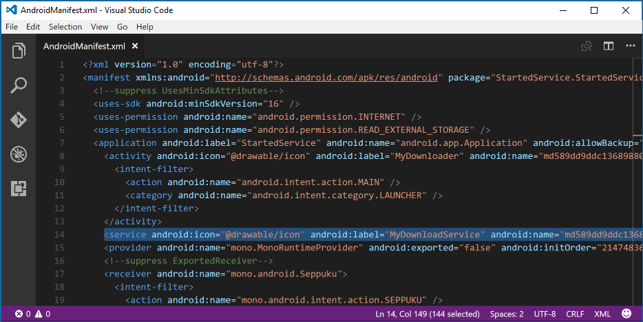

Duration
10 minutes
Goals
The primary goal of this lab is to create and declare an Android service. In later exercises, we'll use it to peform long-running operations.
Required assets
The provided Exercise 1 folder contains a subfolder named Start that you'll use for this exercise. It also contains a folder named Completed with a solution you can use to check your work. Please make sure you have these folders before you begin.
Challenge
You'll create a mock service to perform downloads that will be used in later exercises.
- Open the Start solution.
- Create a new class named
MyDownloadServiceservice that derives fromService. - Override
OnBind,OnStartCommand,OnCreateandOnDestroy. - Add the [Service] attribute.
- Build the project and inspect the generated AndroidManifest.xml in the obj -> Debug -> android folder.
Steps
Crate a Service derived class
- Open the Start solution in the Exercise 1 folder.
- Add a new class named
MyDownloadServicethat inherits fromService. - Override the required
OnBindmethod.
Override service lifecycle methods
- Override
OnStartCommand. - Remove the default code and return a valid argument for
StartCommandResult. How should a download service behave when stopped by the OS? - Override
OnCreateandOnDestroy. - For all four overriden lifecycle methods (including
OnBind) add eitherDebug.WriteLineorLog.Debugstatements to indicate execution in the IDE's output window.
Declare the service
- Add the Service attribute above the class definition.
- Set the service
Labelwithin the attribute; the example code uses MyDownloadService. - Set the service
Iconto@drawable/Icon. - Compile the project.
- Inspect the AndroidManifest.xml in the Properties folder. Notice the service is not defined.
- Now open either Explorer on Windows or Finder on macOS and navigate to the root of your solution.
- Navigate to MyDownloader -> obj -> Debug -> android and examine the generated AndroidManifest.xml using any text editor and find the service definition.
Summary
In this exercise, you created a class that derives from Service and declared the service using the service attribute. We'll finish and start the service in the next exercise.